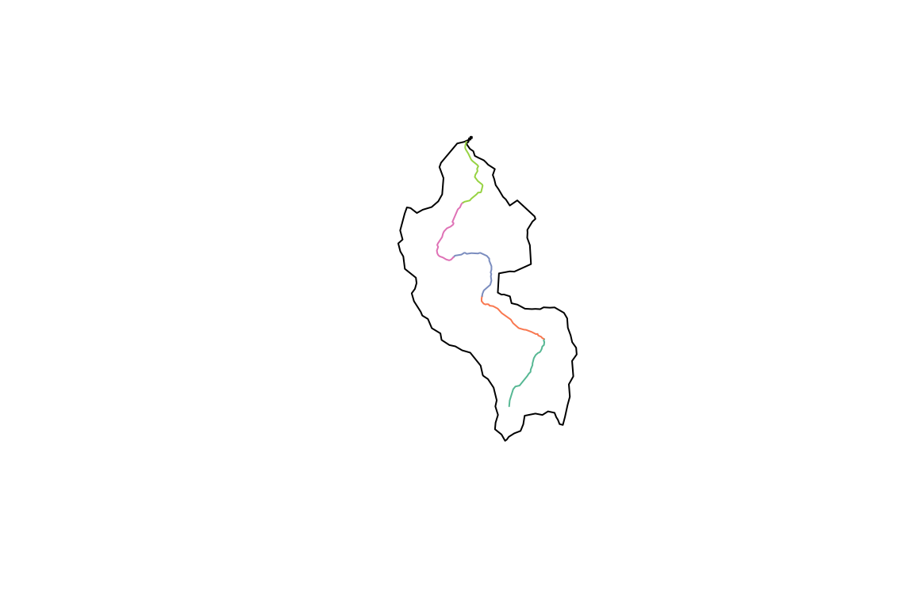
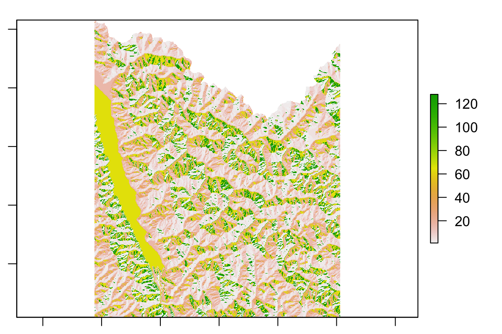
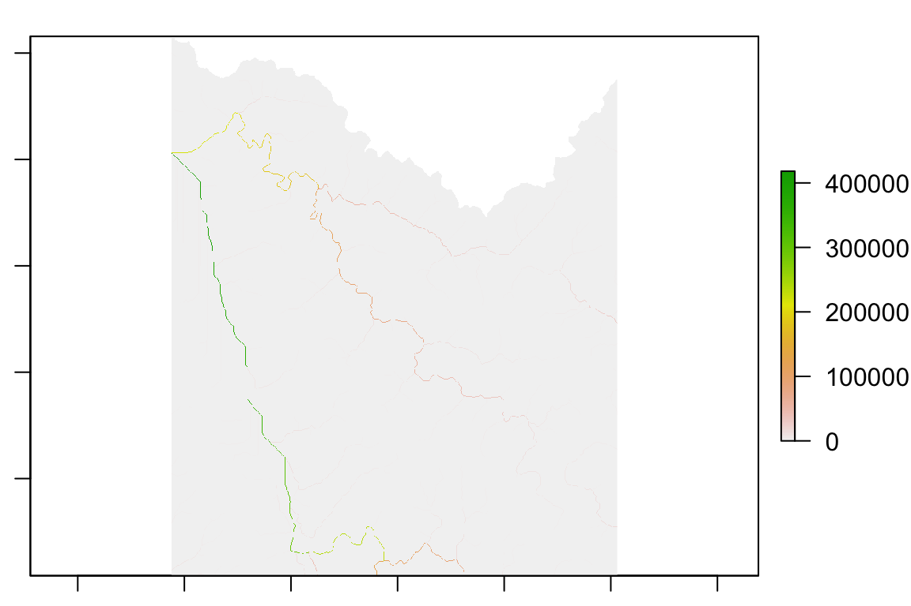
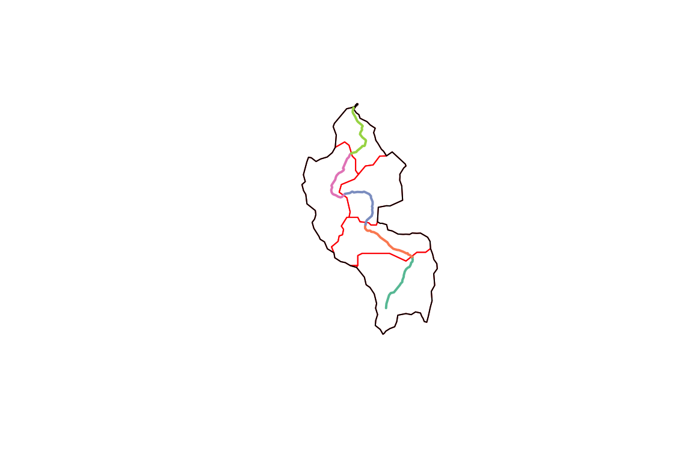
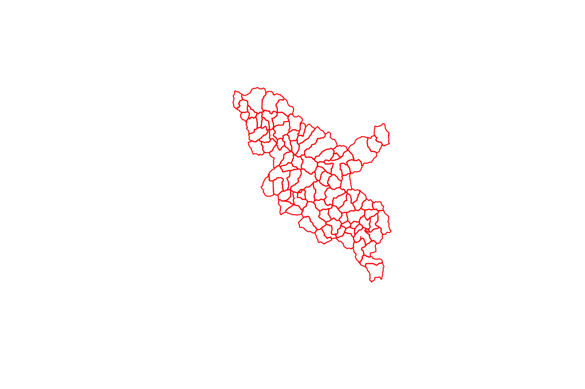
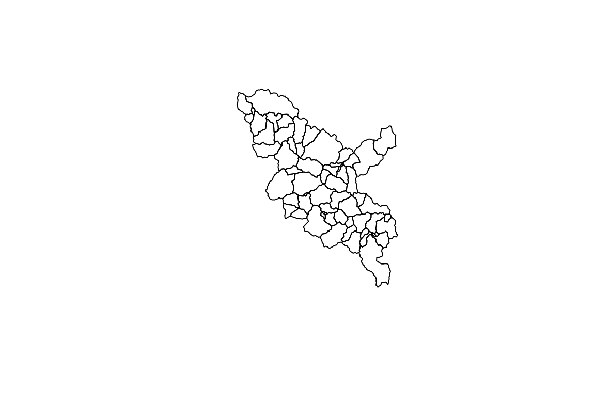
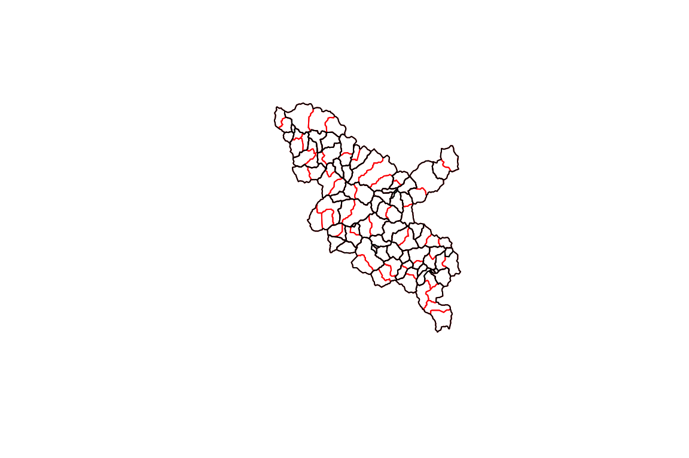

vignettes/refactor_catchment.Rmd
refactor_catchment.RmdFor this example, we will use some data available from the nhdplusTools package for testing and examples. fac_sample, fdr_sample, flowline_sample, catchment_sample are all included as sample data in nhdplusTools.
Before we can do anything with the catchments, we need to run the NHDPlus Refactor workflow documented over in vignette("refactor_nhdplus").
library(sf)
#> Linking to GEOS 3.8.1, GDAL 3.0.4, PROJ 7.0.0
library(nhdplusTools)
#> USGS Support Package: https://owi.usgs.gov/R/packages.html#support
library(hyRefactor)
#> USGS Support Package: https://owi.usgs.gov/R/packages.html#support
library(raster)
#> Loading required package: sp
source(system.file("extdata", "walker_data.R", package = "hyRefactor"))
#> rgdal: version: 1.4-8, (SVN revision 845)
#> Geospatial Data Abstraction Library extensions to R successfully loaded
#> Loaded GDAL runtime: GDAL 3.0.4, released 2020/01/28
#> Path to GDAL shared files:
#> GDAL binary built with GEOS: TRUE
#> Loaded PROJ.4 runtime: Rel. 7.0.0, March 1st, 2020, [PJ_VERSION: 700]
#> Path to PROJ.4 shared files: (autodetected)
#> Linking to sp version: 1.4-1
refactor_nhdplus(nhdplus_flines = walker_flowline,
split_flines_meters = 2000,
collapse_flines_meters = 1,
collapse_flines_main_meters = 1,
split_flines_cores = 2,
out_collapsed = "data_dir/refactor.gpkg",
out_reconciled = "data_dir/reconcile.gpkg",
three_pass = TRUE,
purge_non_dendritic = FALSE,
warn = FALSE)
flowline_ref <- read_sf("data_dir/refactor.gpkg")
flowline_rec <- read_sf("data_dir/reconcile.gpkg")Let’s start by looking at a single sample catchment. In the first plot, you can see the input is a single polygon and a set of catchment flowlines. For reference, the Flow Direction Raster (FDR) and Flow Accumulation Raster (FAC) are also plotted.
sample_catchment <- dplyr::filter(walker_catchment, FEATUREID == 5329435)
sample_flowline <- dplyr::filter(flowline_ref, as.integer(COMID) == 5329435)
plot(st_geometry(sample_catchment))
plot(sample_flowline["COMID"], add = TRUE)


Now we can run the split_catchment_divide() function which is designed to take one catchment and its associated (split) flowlines. The split flowlines are the “refactored” but not “reconciled” output of the nhdplus_refactor() function we ran above. Here we run the split_catchment() function and plot up the resulting data to show what it did.
split_cat <- split_catchment_divide(sample_catchment, sample_flowline, walker_fdr, walker_fac)
#> Loading required namespace: rgeos
plot(st_geometry(split_cat), col = NA, border = "red")
plot(st_geometry(sample_catchment), add = TRUE)
plot(sample_flowline["COMID"], lwd = 2, add= TRUE)
As you can see, the flowline in question was split into five pieces by nhdplus_refactor() and the cooresponding catchment (black) was similarly broken up into 5 sub-catchments (red).
The split_catchment_divide() function can be run against a set of catchments using the reconcile_catchment_divides() function. This functiona can call split_catchment() in parallel, unions catchments according to the output of nhdplus_refactor(), and assembles the results back into an sf data.frame.
split_cats <- reconcile_catchment_divides(walker_catchment,
flowline_ref,
flowline_rec,
walker_fdr, walker_fac, para = 4)
plot(st_geometry(split_cats), col = NA, border = "red")

plot(st_geometry(split_cats), col = NA, border = "red")
plot(st_geometry(walker_catchment), col = NA, border = "black", add = TRUE)
Ta Da!! Have fun and report bugs here.